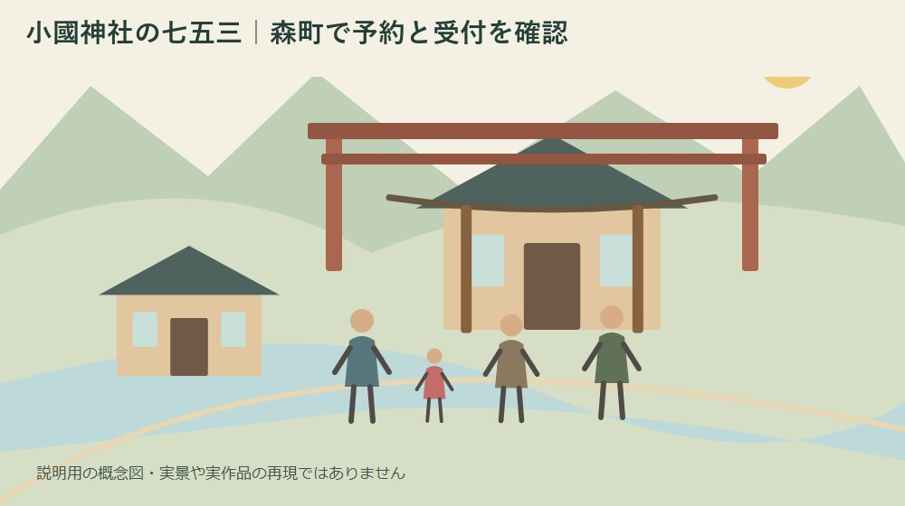
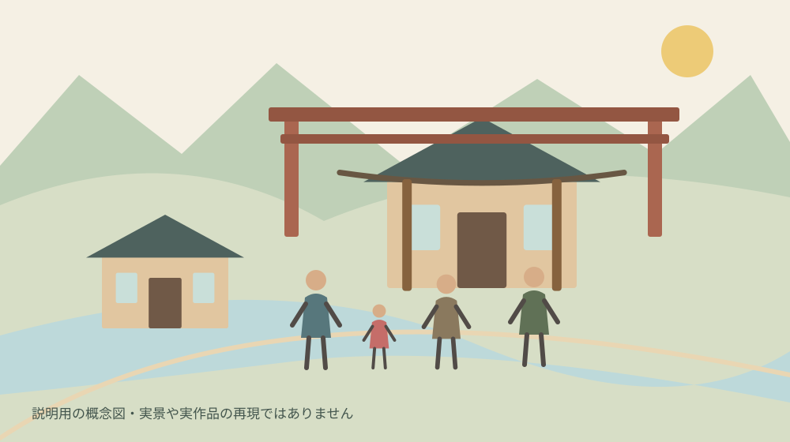
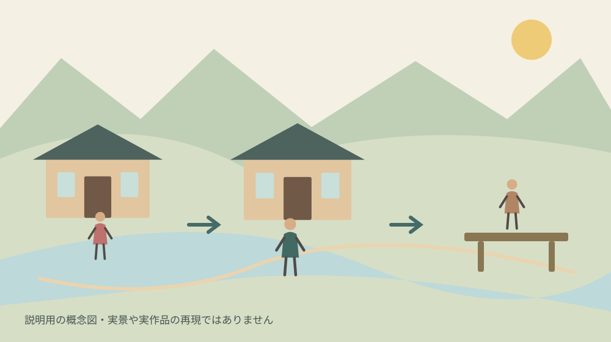

小國神社の七五三｜森町で予約と受付を確認
／ 寺社・歴史

Q. 予約が必要？
小國神社公式案内では事前予約を受け付けず、毎日9〜16時に拝殿正面左側の祈祷受付所で受け付けます。一般の祈祷料は祈願内容1件につき5,000円から。所要20〜30分は移動や待ち時間を含む総滞在時間ではありません。
子どもの成長を祝う一日は、神社で祈祷を支える方と、着付けや移動を整える家族の仕事が重なって成り立ちます。祖父母が同行するなら歩く距離や食事の時刻も気になります。森町の小國神社で七五三を考える方へ、予約と受付の公式案内から、無理のない予定の組み方を整理します。
私は大石浩之（磐田市／不動産業）です。この記事は2026年10月7日に確認した小國神社の公式情報をもとにしています。当日の混雑を見た体験談ではありません。受付条件は公式情報として示し、家族の時間配分は私の提案として分けて書きます。
小國神社の祈祷は、事前予約を受け付けていない
小國神社公式「祈祷・ご祈願」の案内には、事前予約は承っていないと明記されています。毎日9時から16時まで、拝殿正面左側の祈祷受付所で受け付ける案内です。七五三詣も祈願の一覧に載っており、子どもの成長を奉告し、感謝をささげる祈願として紹介されています。
家族の予定を立てる際は、「何時の祈祷枠を取れた」という予約制の考え方をいったん外します。受付時間内に出向くことと、その時刻に必ず祈祷が始まることは別です。予約が不要という情報は、待ち時間がないという保証でも、事前の準備が不要という意味でもありません。
公式の受付時間は16時までですが、夕方に到着してすべての予定を終える時間割を、この記事から保証することはできません。子どもの支度、駐車後の移動、受付にかかる時間もあります。私は、締切時刻へぎりぎりで着く予定より、家族が落ち着いて受付へ向かえる余裕を勧めます。
同行する家族へ伝える文も具体的にします。「予約したから何時集合」ではなく、「予約制ではないので、何時ごろ到着を目指す」と共有します。食事や写真館を別に予約する場合は、神社の祈祷まで同じ予約に含まれると思わないよう、予約先と対象を分けて記録します。
5,000円から、20〜30分は一般の祈祷案内
小國神社の一般の祈祷案内では、祈祷料は祈願内容一件につき5,000円からと記載されています。この金額を家族全員のあらゆる希望を含む一律料金とは扱いません。きょうだいの祈願や複数の内容を希望する場合の扱いなど、個別の条件は神社へ確認してから準備します。
所要時間は20〜30分程度と案内されています。ただし、受付後に神札等の準備ができ次第行い、祭事行事等によって待つ場合があるという説明もあります。20〜30分を、駐車場へ着いてから車に戻るまでの総滞在時間と読むと、後の予定が詰まる原因になります。
祈祷は通常、拝殿で行う案内です。祭事等で拝殿を使う場合は神徳殿で行うと記されています。家族が別々に到着するとき、祈祷場所を固定してそこで待つ約束にするより、受付や当日の案内を確かめて合流方法を決めるほうが、行き違いを避けやすくなります。
私は、一日の費用を考えるなら、祈祷料、衣装、写真、移動、食事を分ける方法を勧めます。公式案内の5,000円という数字に、それらの費用が含まれるわけではありません。外部サービスの条件を神社の案内へ混ぜず、誰がどの支払いを準備するかを家族で共有します。
11月の行事表と、家族の参拝日は分けて読む
小國神社公式の年間行事表には、11月1日に七五三詣り、15日に七五三祝祭の記載があります。一方、祈祷案内は毎日受付としています。行事表の日付だけから、七五三の祈祷を受けられるのはその二日だけだと判断する必要はありません。
今回確認した年間行事表は、2026年秋に限った受付変更のお知らせではありません。例年の行事を知る資料と、その日の最新の運用を知らせる案内は役割が異なります。参拝日が決まったら、直前に公式のお知らせや祈祷案内を確認し、変更の有無を見てから出発します。
家族全員の休みが11月15日に合うとは限りません。私は、特定の日に全員を合わせることだけを成功の条件にしないほうがよいと考えます。子どもの体調と祖父母の移動を含め、家族が無理なく参拝できる日を候補にし、その日の受付条件を確認する組み方です。
秋の神社への移動を詳しく調べたい場合は、小國神社へ向かうバスと秋の準備の記事も参照できます。ただし、以前に保存した便の時刻が参拝日にそのまま使えるとは限りません。行きだけでなく、帰りの便と待ち合わせ場所まで公式情報へ戻って照合します。

良い点は、予約枠に縛られず候補日を考えられること
小國神社の予約を受け付けない方式は、決まった時刻の予約枠を押さえる段取りが要らない点で、家族の候補日を考える入口になります。私は、子どもの体調が読みにくい家庭にも、この条件を正確に知る意味があると考えます。ただし、待ち時間を見込む準備とセットで受け止めたいところです。
受付場所と時間が公式に示されている点も助かります。出発時刻を考えるときに、どこを目指すかという基準ができます。予約サイトを探し続けるより、神社の案内を家族で同じ画面で確認すれば、「予約したつもり」「誰かが手配したはず」という行き違いを防ぎやすくなります。
祈祷場所が祭事によって変わることまで案内されている点も、事前に知る価値があります。私は、参拝者の予定だけで一日の流れを決めない説明に意味を感じます。社寺には祈祷以外の祭事や日々の務めがあり、その場を支える方の仕事と並行して受け付けてもらうためです。
子どもと建物を眺める余裕があれば、森町の神社建築を扱った記事も関心の入口になります。ただし、七五三の日に建築見学まで全部盛り込む必要はありません。私は、祈りの場としての使われ方を尊重し、立ち入れる範囲で一つ気付くくらいでも十分だと思います。
注文したい点は、家族が必要とする条件の違い
小國神社の一般祈祷案内だけでは、衣装、撮影、七五三の個別授与品などの条件をすべて確認できません。私は、家族が手配する部分と神社へ確認する部分が分かると、さらに準備しやすいと考えます。この記事では、衣装の貸出しや写真撮影が祈祷に含まれるとは案内しません。
当日の待ち時間も事前に確定できません。土日なら何分、早朝なら必ず空いている、といった目安を裏付ける資料は今回確認していません。混雑予測を断定する代わりに、待った場合に何を後へ回すかを決めておくほうが、実際の家族の負担を小さくできるというのが私の考えです。
祖父母が同行する場合は、車を降りてからの移動、立って待てる時間、途中で休む必要を本人に聞きます。年齢だけで歩ける距離を決めないようにします。段差や車いすでの動線などが予定を左右するなら、必要な条件を具体的に伝えて神社へ確認します。
問い合わせを一人に集める工夫も役立ちます。父母と祖父母がそれぞれ同じ質問をすると、案内を受けた時点の違いも混ざりがちです。私は、代表者が確認日と回答を記録し、家族へ共有する方法を勧めます。神社に同じ説明を何度もお願いする負担も抑えられます。
対案・結論：祈祷と移動の時間を別に書く
小國神社の七五三で今日できる一歩は、家族の予定表を「支度」「移動」「受付・祈祷」「食事・帰宅」に分けることです。公式案内の20〜30分は祈祷の所要時間として置き、待ち時間や着替えを含む枠と混同しません。まず、この区別を共有するだけでも予定の過密さが見えます。
着付けや写真館を使う場合は、その予約の前後に何をするかを決めます。祈祷が終わった直後に動かせない予約を置くと、待つ間に家族が焦る原因になります。私は、時間を固定する予定を増やす前に、変更できる予定とできない予定を見分けるよう提案します。
きょうだいがいるなら、誰がどの子の荷物を持つかも決めます。慣れない衣装で過ごす子と普段着の子では、必要な持ち物が違うかもしれません。この記事で神社の持込条件まで確認したわけではないため、飲食や着替えをする場所は現地の規則に従い、持物は必要な分に絞ります。
食事の予定は、全員がそろう時刻を一点で決めるより、変更の条件を確認しておくと安心です。予約店を利用するなら遅れる場合の連絡方法を控えます。待ち時間が伸びたときに連絡する人を決めておけば、子どもを見ながら全員が電話を探すような状況を避けやすくなります。
公共交通で向かう場合、森町公式「森町の公共交通について」が移動手段を探す入口になります。町公式の「鉄道・民間路線バス・タクシー リンク集」には各事業者への案内があります。個別便の運行時刻は運行事業者の最新資料で確かめ、町の入口ページだけで乗れる便を確定しません。
車で向かう場合も、駐車待ちや周辺道路の状況はその日次第です。今回の調査では2026年の七五三期の具体的な待ち時間や駐車運用を確認していません。到着時刻を保証する数字は置かず、交通案内を確認し、家族の集合を一か所に集中させすぎない方法も考えます。

家族に残す記録は、連絡先と変更できる予定
七五三の共有メモには、参拝候補日、目標到着時刻、集合場所、代表の連絡先を書きます。その横へ「神社の祈祷は予約していない」と明記すると、外部の写真や食事の予約と区別できます。誰が読んでも同じ理解になる短いメモのほうが、長い説明を送り合うより使いやすくなります。
子どもの体調が優れない場合の判断も、前もって家族で共有します。日程を変える場合、写真、衣装、食事のどこへ連絡する必要があるかを分けます。この記事は個別サービスの取消条件を確認していないため、予約先の規定を保存しておき、思い込みで費用を計算しないようにします。
写真を思い出として残す際も、神社の撮影条件を確かめます。外部の撮影者に依頼する場合は、境内で何が認められるかを依頼先だけの説明で決めず、神社の案内と照合します。他の参拝者や祈祷の動きを妨げないことも、家族がその日にできる配慮です。
参拝の場が続く背景を知りたい方は、小國神社の維持を考える記事も読めます。ただし、七五三の準備と、維持への関わり方は別の判断です。私は、まず家族の祈願を落ち着いて終え、そのうえで関心があれば支える仕事を知る順序でよいと考えます。
大石の視点：一日の成功を、予定の消化数で測らない
私は、七五三の段取りは「何件の予定を回れたか」ではなく、家族が無理なく帰れたかで考えます。不動産の相談でも、書類一枚の用事に見えて、移動する人の都合が全体を左右します。祈祷の20〜30分だけを切り出さず、その前後を動く人の時間まで見る姿勢は同じです。
ここからは私ならどう組むかという意見です。家族の時間割を紙に書くとき、私は最初に帰宅の目安を置きます。その次に、祖父母が移動できる時間と子どもの支度を並べます。余白が足りなければ立ち寄りを一つ減らします。今回、私が七五三へ同行した実話ではなく、家族の段取りを考える場面として示しています。
私も、祖父母まで全員がそろう写真を残したい気持ちと、子どもを疲れさせたくない気持ちの間には迷いがあると思います。どちらかを一律に優先する答えは持っていません。ただ、変更できない予約を重ねるほど、当日に選べる余地が減ることは、予定表の上で確かめられます。
予約不要は、準備不要ではありません。私はこの点を言い切っておきたい。神社が祈祷を支える仕事と、家族が移動を支える仕事を分けて考えると、問い合わせることも今日できることも見えてきます。まずは公式案内を一つ共有し、祈祷と総滞在時間を分けて書くところからで十分です。
FAQ
小國神社の七五三は予約が必要ですか？
2026年10月7日に確認した公式の祈祷案内では、事前予約は受け付けていません。毎日9〜16時、拝殿正面左側の祈祷受付所で受け付けます。予約不要でも待ち時間がないとは限りません。衣装や写真、食事を別に予約する場合は祈祷と区別し、参拝直前にも神社の最新案内を確認してください。
祈祷料はいくらで、どのくらい時間がかかりますか？
一般の祈祷案内は祈願内容一件につき5,000円から、所要時間20〜30分程度です。祭事行事等により待つ場合があるため、移動や受付を含む総滞在時間ではありません。きょうだいの祈願や個別授与品などの扱いは神社へ確認してください。外部の衣装や撮影、食事の費用が含まれる金額としては扱いません。
七五三は11月15日しか受けられませんか？
公式の年間行事表は11月1日に七五三詣り、15日に七五三祝祭を載せていますが、一般の祈祷案内は毎日受付としています。行事表の日付だけで祈祷日がその二日に限定されるとは読みません。家族の候補日を決めたら、その時点の公式案内を確認します。2026年限定の変更告知を確認した記事ではありません。
出典・確認日
- 小國神社・祈祷とご祈願（2026年10月確認／確認日：2026-10-07）
- 小國神社・祭典と神事（2026年10月確認／確認日：2026-10-07）
- 森町・公共交通の案内（2026年10月確認／確認日：2026-10-07）
- 森町・鉄道と民間路線バス等のリンク集（2026年10月確認／確認日：2026-10-07）
最終確認日：2026-10-07。制度・日程・数値・受付条件は変わる場合があります。最新情報は発信主体へ確認し、修復・権利・税務などの個別判断は適切な専門家へご相談ください。